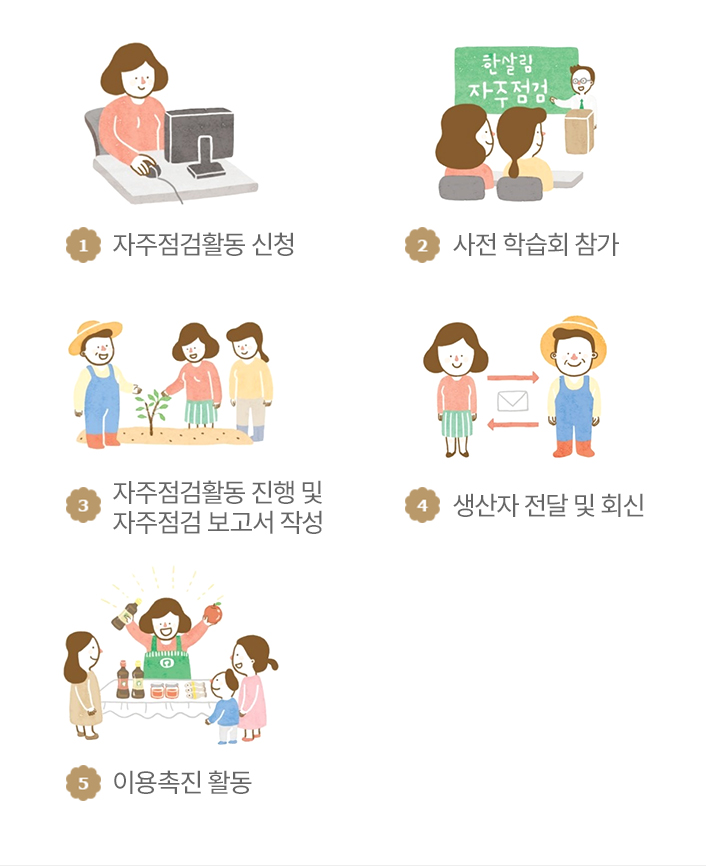
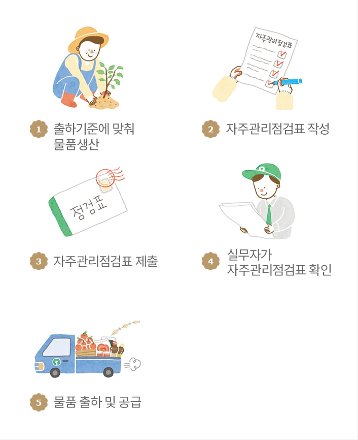

방사능 검사
농식품 안전센터
자주인증/자주관리ㆍ점검
축산물 이력검사
자주인증
자주인증이란?
- 한살림과 한경대학교는 농축산물 분석연구를 위한 산학 협약을 체결하고, 한살림농식품분석센터를 열었습니다.
- 잔류농약 320여 성분 분석과 방사능 검사 등 독자적인 분석시스템을 구축하여 안전성과 공신력을 높였습니다.
왜 시작했나요?
광부병, 멜라닌, 조류독감 등 식품안전 관련 이슈들이 점차 증가되면서 아래와 같은 이유로 자주인증을 시작하게 되었습니다.
- 먹거리에 관한 조합원들의 불안감해소
- 사회적 대응에 유연한 생산관리체계
- 이에 걸 맞는 한살림만의 차별화된 기준 수립
- 생산자와 소비자가 함께 약속하고 책임지는 관례를 높이는 시스템
구체적으로 무엇인가요?
- 일정한 교육과정을 수료한 조합원이 생산지를 직접 방문하여 한살림이 정한 생산기준에 따라 물품이 생산되고 있는지를 확인한 물품을 공급하는 조합원 참여형 자체 인증시스템 입니다.
- 생산기준을 생산자와 소비자가 약속하고, 함께 생산과정을 확인 및 공유하며 책임있는 생산소비 및 협력관계를 강화하는 시스템입니다.
국가에서 하는 인증과 어떻게 다른가요?
- 자주인증제도는 물품을 생산하고 소비하는 생산자, 조합원이 직접 참여하여 한살림 가치가 반영된 엄격한 자주 기준에 따라 인증이 이루어집니다.
※ 자주인증? 한살림에서 자체적으로 운영하는 인증제도 입니다. 국가가 공인한 인증은 아닙니다.
| 구분 |
시료명 |
생산분야 |
| 인증 주체 |
국가주도 |
한살림 생산지와 한살림 조합원 |
| 인증 기관 |
관련 법령, 규칙 |
한살림 자주기준 |
| 우선 가치 |
제 3차 인증 (민간 인증 기관) |
3자 기관 참여없음 |
| 현장 심사 |
인증 기관의 심사원 |
한살림 조합원, 한살림 실무자 |
| 심사 기구 |
인증 기관 내 심의기구 |
한살림 자주관리 점검위원회 |
어떤 물품이 대상인가요?
- 한살림에서 농약을 사용할 수 있는 7개 품목의 과실에 대하여 자주인증 진행하고 있습니다. 사과, 배, 복숭아, 자두, 대추, 감(단감, 대봉)이며 앞으로 대상물품을 확대할 계획입니다.
자주관리ㆍ점검
함께하는 자주관리·자주점검
- 한살림이 취급하는 물품의 기준은 소비자들이 직접 참여해 만듭니다. 생산자와 소비자의 신뢰를 바탕으로 만든 한살림 물품은 믿을 수 있습니다.
자주관리
- 생산자가 스스로 물품 생산과정을 점검하고 확인합니다.

자주점검
- 조합원이 평소 궁금해하던 물품의 생산과정을 직접 확인 합니다.

자주점검활동 안내
- 자주점검활동 운영방법은 소속회원생협마다 다릅니다. 자세한 사항은 소속회원생협 홈페이지나 장보기 알림을 통해 받아 볼 수 있습니다.